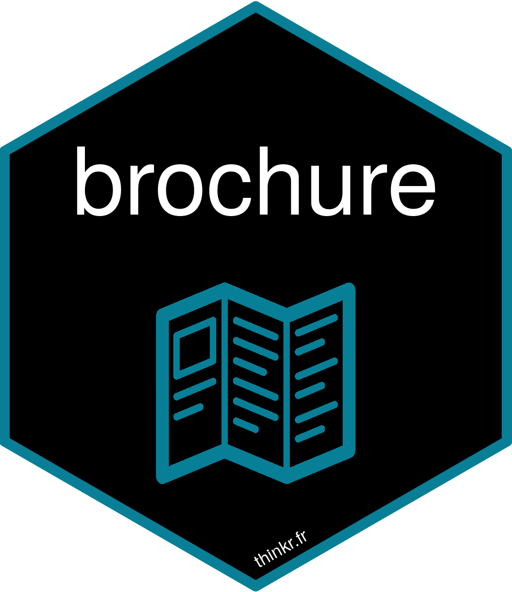

A {shiny} app is a single page: one url, one UI, one server function. That is comfortable while the app stays small. As soon as you want an actual site, with a home page, a contact page, one page per user, urls people can bookmark or send by email, you end up faking pages with tabs and conditionalPanel(), and carrying the whole app in memory on every one of them.
{brochure} takes the problem the other way around: every page is a real page, with its own url, its own UI, its own server function and its own Shiny session. It is now on CRAN, in a stable 1.0.0.
install.packages("brochure")A first app
You declare a page() with its own href, its UI, and a server function if the page needs one. brochureApp() assembles them into an app you run like any other.
library(shiny)
library(brochure)
brochureApp(
page(
href = "/",
ui = fluidPage(
h1("Home"),
plotOutput("plot"),
tags$a(href = "/contact", "Contact us")
),
server = function(input, output, session) {
output$plot <- renderPlot({
plot(iris)
})
}
),
page(
href = "/contact",
ui = fluidPage(
h1("Contact"),
tags$p("No server function in this one.")
)
),
redirect(from = "/index.html", to = "/")
)Navigate to / and to /contact. Moving from one to the other is a plain link: the browser leaves the first page and opens a new session on the second one. The home page runs its renderPlot(), and the contact page has no server function, so nothing runs there.
Urls that carry something
An href can hold a variable segment, and the page reads what it matched with get_keys(): no argument inside the server, the request inside the UI.
page(
href = "/user/:id",
ui = function(request) {
fluidPage(h1(paste("User", get_keys(request)$id)))
},
server = function(input, output, session) {
message("Serving user ", get_keys()$id)
}
){routr} handles the dispatch. A page can also answer on a method other than GET, which is what you want for a form post or a webhook.
Doing things before Shiny
Between the moment a browser asks for a page and the moment it gets an answer, {brochure} gives you two places to intervene: req_handlers run before Shiny builds anything, res_handlers run on the way out. In {shiny} terms, this is code that runs where no reactive context exists yet.
brochureApp(
page(href = "/", ui = tagList(h1("Home"))),
req_handlers = list(
function(req) {
message(Sys.time(), " - ", req$PATH_INFO)
req
}
)
)A request handler that returns an httpResponse short-circuits: the response is sent immediately and no Shiny session is created. That is how you serve something that is not a page from inside a Shiny app, like a healthcheck for your orchestrator, a webhook receiver or a small JSON endpoint.
Carrying state between pages
Every page is a new session, so nothing computed on one survives a navigation to another. State shared between pages has to be written down somewhere, and the usual place is a cookie, set from a response handler and read back from the page server.
page(
href = "/login",
ui = tagList(h1("You are logged in")),
res_handlers = list(
~ set_cookie(.x, "SESSION", "a-random-id", path = "/")
)
)set_cookie() defaults to http_only = TRUE and same_site = "Lax", and checks names and values against the character set cookies allow. vignette("cookies") covers the whole pattern, logout included.
Deploying it
A brochure app is a Shiny app, so it deploys like one. The part specific to serving several urls is the prefix your app is mounted under: behind a reverse proxy, on shinyProxy or on Posit Connect, {brochure} finds that mount, strips it from incoming requests and prefixes the urls the app emits. vignette("deployment") walks through the configurations.
And with {golem}
If you build your Shiny apps as packages, golem_hook() turns a golem app into a brochure app: it sets up the app object, creates a first page as a module, adds {brochure} to your Imports, and writes a test for that page along with the testthat structure to run it under R CMD check.
What it costs
A brochure app is not a single page application any more, and that changes things: a navigation is a full page load, nothing computed on one page is available on the next, all pages share one R process, and a page that blocks holds up every other page. vignette("design") says all of it, including when not to reach for {brochure}.
Where to read more
Everything lives at colinfay.me/brochure: get started, handlers, cookies, design, deployment, testing and golem.
If you were running the GitHub version
1.0.0 rewrites the routing on top of {routr} and fixes a long list of bugs, so a few things change on the way:
keysis gone. A parameterised page used to read its matched values from akeysobject installed in the global environment, invisible from a module, a golem app or anylocal(). Useget_keys().set_cookie()has safer defaults (http_only = TRUE,same_site = "Lax"), and cookie values, domains, paths and redirect targets are validated rather than interpolated as is....inbrochureApp()is typed. It takespage()s,redirect()s, tags, tag lists, html dependencies and strings; anything else is an error. A bare list of pages is spliced, sobrochureApp(list(page_1(), page_2()))builds two pages.
The changelog has the rest.
Feedback
Bugs, ideas and questions go to the issue tracker.
Happy multipaging 🚀